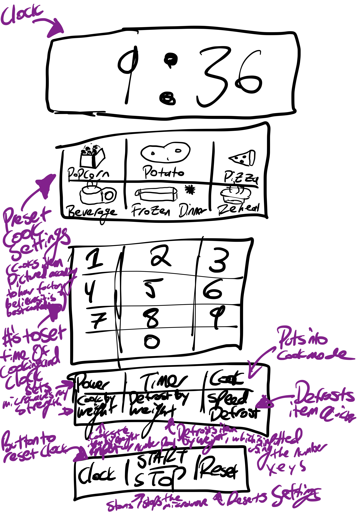
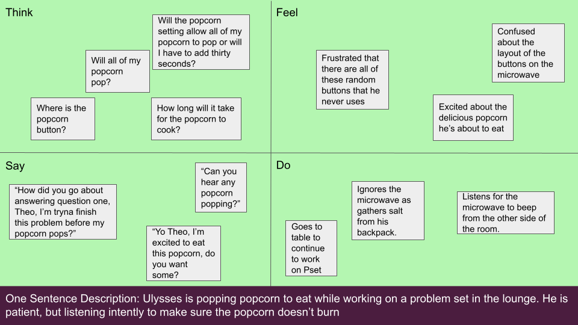
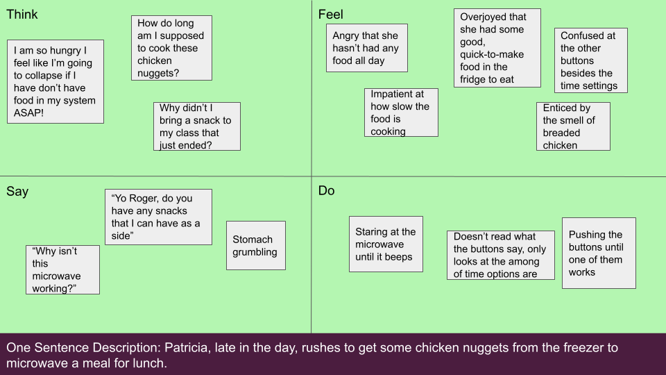

Persona & Storyboard - Maxcy Hall Microwave
Key Words: UX Research, Storyboard, Persona, Observation
Project Description
For this project, I evaluated the efficacy of the microwave in the basement lounge of Maxcy Hall (Brown's Urban Studies and Sociology building). To perform this evaluation I:
- Took observations and interviewed of users of the microwaves.
- Created empathy maps for personas based on my observational data.
- Drew out a storyboard detailing an interaction of one of my personas with the microwave's interface.

Interface Description
This keypad to the right of the microwave allows the user to set the settings and time for the use of the device (typically to heat or reheat food/drinks). The top of the microwave has a clock that changes to a timer display while the microwave is on. Below that is a cluster of presets for different types of food and then below that there is a numeric keypad for entering the time to cook the device. The next cluster has miscellaneous settings, while the bottom has buttons to start, reset, and set the microwaves functions.
Questions and Responses
What were your motivations for using the microwave’s keypad?
- Person 1: I wanted pop popcorn to eat while studying.
- Person 2: To put in the time to make my leftovers.
- Person 3: To heat up some water for some tea.
Which buttons do you use most? Which ones do you use least? How did you make this decision?
- I only use the popcorn button and the numeric keypad. I use the least the defrost and power settings. Only start, stop, minute settings.
- I use the timepad the most. Don’t get what the popcorn and potato mean. It doesn’t make sense to me. I also don’t get the power button. Can the microwave be stronger or weaker? I do not use any of these at all. I do not understand any of the buttons except the time buttons, because I do not trust the microwave programmer.
- I like to use the 'add one minute' function. I usually put my food into the microwave for a minute then check it then try it again at those one minute intervals. I never use the defrost features, as they confuse me.
Did you encounter hiccups while using the microwave? If so what?
- Not really, the main struggle I have is trying to figure out how long it will take for the popcorn to pop but I usually judge that by when the popcorn stops popping.
- I don't encounter hiccups when I stick to my timepad.
- I always cannot figure out the right amount of time to cook my food!
If you could replace one feature on the microwave with another, new function, which would you replace?
- Some microwaves have a function called sensory heat, and I would use that instead of one of the weight features.
- Add a mute button so I don’t disturb other people when I make my food.
- To be honest, I wouldn't add any buttons, there are just so many to pick from that I feel overwhelmed when I approach the microwave. I would say goodbye easiest to the 'by weight' feature and potato cook button, however.
Personas
Persona One - Ulysses

Persona Two - Patricia
Storyboard for Ulysses